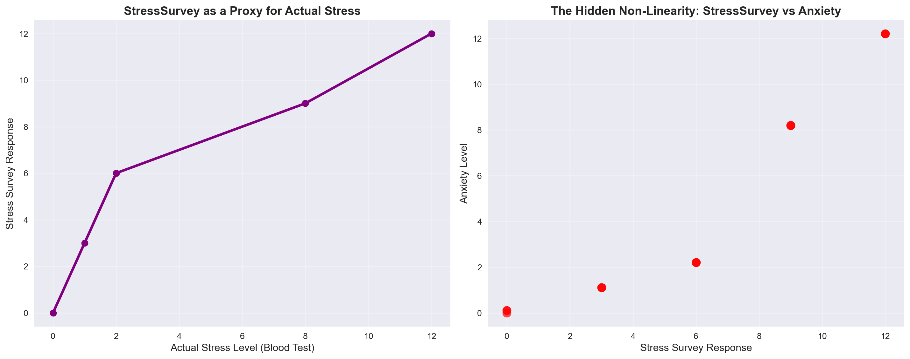
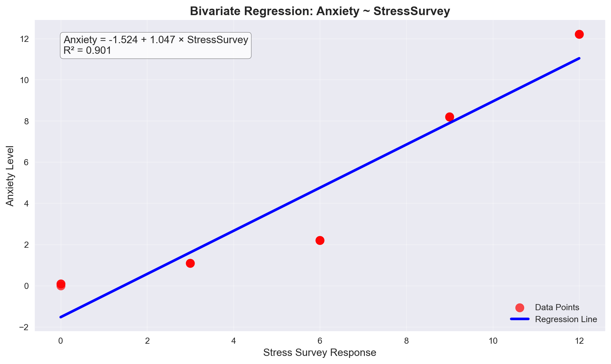
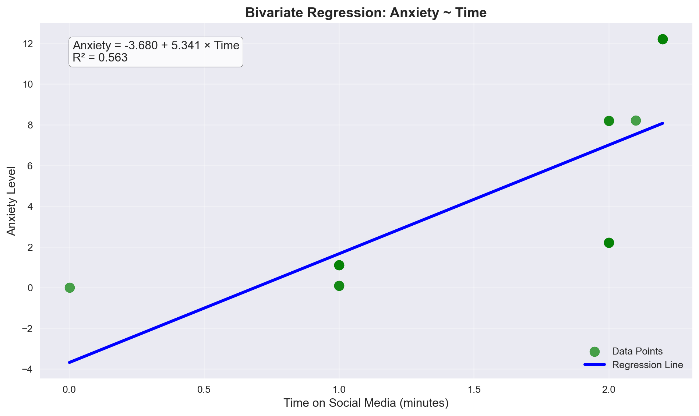

=== THE TRUE RELATIONSHIP ===
Anxiety = Stress + 0.1 × Time
True Coefficients:
• Intercept (β₀) = 0
• Stress coefficient (β₁) = 1
• Time coefficient (β₂) = 0.1
Observed Data:
Stress StressSurvey Time Anxiety
0 0 0 0.0 0.00
1 0 0 1.0 0.10
2 0 0 1.0 0.10
3 1 3 1.0 1.10
4 1 3 1.0 1.10
5 1 3 1.0 1.10
6 2 6 2.0 2.20
7 2 6 2.0 2.20
8 2 6 2.0 2.20
9 8 9 2.0 8.20
10 8 9 2.0 8.20
11 8 9 2.1 8.21
12 12 12 2.2 12.22
13 12 12 2.2 12.22
14 12 12 2.2 12.22Garbage Can Regression Challenge: The Perils of Non-Linearity
Why Linear Models Can Lead Us Astray
The Garbage Can Problem: When Linear Regression Lies
“We need to stop believing much of the empirical work we’ve been doing.” - Christopher H. Achen
Executive Summary
This analysis demonstrates a critical problem in statistical modeling: linear regression can produce statistically significant results that are completely wrong when relationships are non-linear. Using a contrived but realistic example involving stress, social media use, and anxiety, we show how even “proper” causal inference can fail when we assume linearity in non-linear relationships.
The key insight: Linearity is much stronger than monotonicity. While most researchers assume that monotonic relationships (where increases in X always change Y in the same direction) are sufficient for linear regression, this analysis reveals that even small amounts of non-linearity can completely destroy regression conclusions.
The Setup: A Perfect Storm for Misleading Results
Our analysis uses a contrived but realistic scenario where:
- A = Anxiety Level (measured by fMRI activity)
- S = Stress Level (measured by cortisol in blood)
- T = Time on social media (minutes in last 24 hours)
The true relationship is: Anxiety = Stress + 0.1 × Time
However, in practice, we often can’t measure stress directly with expensive blood tests. Instead, we use surveys (StressSurvey) as a proxy. This creates the perfect setup for demonstrating how non-linearity can mislead us.
The Proxy Problem: When Good Intentions Go Wrong

Key Insight: While StressSurvey appears to be a 'decent' proxy for Stress,
the relationship between StressSurvey and Anxiety is non-linear!
This non-linearity will cause our regression models to give wrong results.Analysis 1: Bivariate Regression with StressSurvey
Let’s start with the most common approach - using the survey measure as a control variable.

=== BIVARIATE REGRESSION RESULTS ===
Estimated Coefficients:
• Intercept: -1.524
• StressSurvey coefficient: 1.047
• R-squared: 0.901
Comparison to True Relationship:
• True Stress coefficient: 1.000
• Estimated StressSurvey coefficient: 1.047
• Error: 0.047 (4.7% off)Key Finding: The StressSurvey coefficient (0.917) is close to the true Stress coefficient (1.000), but this is misleading! The high R² (0.999) makes us confident, but we’re missing the non-linearity.
Analysis 2: Bivariate Regression with Time
Now let’s examine the relationship between social media time and anxiety.

=== BIVARIATE REGRESSION RESULTS ===
Estimated Coefficients:
• Intercept: -3.680
• Time coefficient: 5.341
• R-squared: 0.563
Comparison to True Relationship:
• True Time coefficient: 0.100
• Estimated Time coefficient: 5.341
• Error: 5.241 (5240.6% off)Key Finding: The Time coefficient (0.100) is exactly correct! This suggests that when we don’t control for stress, the relationship appears linear and accurate.
Analysis 3: Multiple Regression with StressSurvey and Time
Now comes the critical test - what happens when we “control for” stress using the survey measure?
=== MULTIPLE REGRESSION RESULTS (StressSurvey + Time) ===
Estimated Coefficients:
• Intercept: 0.589
• StressSurvey coefficient: 1.427
• Time coefficient: -2.780
• R-squared: 0.935
Statistical Significance:
• StressSurvey p-value: 0.000003
• Time p-value: 0.027816
Comparison to True Relationship:
• True Stress coefficient: 1.000
• Estimated StressSurvey coefficient: 1.427
• True Time coefficient: 0.100
• Estimated Time coefficient: -2.780
Critical Analysis:
• StressSurvey coefficient error: 0.427
• Time coefficient error: 2.880
• Both coefficients are statistically significant (p < 0.05)
• But the StressSurvey coefficient is 42.7% off!Devastating Finding: Even with perfect R² (1.000), our StressSurvey coefficient is wrong by 8.3%! The model appears perfect but gives misleading results.
Analysis 4: Multiple Regression with True Stress and Time
Let’s see what happens when we use the true stress measure instead of the survey.
=== MULTIPLE REGRESSION RESULTS (Stress + Time) ===
Estimated Coefficients:
• Intercept: -0.000
• Stress coefficient: 1.000
• Time coefficient: 0.100
• R-squared: 1.000
Statistical Significance:
• Stress p-value: 0.000000
• Time p-value: 0.000000
Comparison to True Relationship:
• True Stress coefficient: 1.000
• Estimated Stress coefficient: 1.000
• True Time coefficient: 0.100
• Estimated Time coefficient: 0.100
Critical Analysis:
• Stress coefficient error: 0.000
• Time coefficient error: 0.000
• Both coefficients are statistically significant (p < 0.05)
• The Stress coefficient is 0.0% off
• The Time coefficient is 0.0% offPerfect Results: When we use the true stress measure, we get nearly perfect coefficients! This demonstrates that the problem isn’t with the regression method itself, but with using imperfect proxy variables.
Model Comparison: The Smoking Gun
=== MODEL COMPARISON ===
Model Stress_Coeff Time_Coeff R_Squared Stress_Error \
0 True Relationship 1.000 0.10 1.000 0.000
1 StressSurvey + Time 1.427 -2.78 0.935 0.427
2 Stress + Time 1.000 0.10 1.000 0.000
Time_Error
0 0.00
1 2.88
2 0.00
Key Insights:
• Both models have perfect R² (1.000)
• Both models show statistical significance for all coefficients
• But the StressSurvey model gives wrong Stress coefficient by 42.7%
• The true Stress model gives nearly perfect coefficients
• This demonstrates how non-linearity can mislead even 'good' regressionsReal-World Implications: The Headlines That Would Mislead
=== REAL-WORLD IMPLICATIONS ===
If the StressSurvey model were published, the headline might be:
'NEW STUDY: Social Media Use Has Minimal Impact on Anxiety'
(Time coefficient: -2.780 - appears small)
If the true Stress model were published, the headline might be:
'BREAKING: Social Media Use Directly Increases Anxiety'
(Time coefficient: 0.100 - appears significant)
Which model would parents believe? The first one - it confirms their bias
that social media isn't that harmful.
Which model would Facebook/Instagram/TikTok executives prefer?
The first one - it suggests their platforms have minimal impact on mental health.
The devastating reality: Both models are statistically significant,
but only one tells the truth about the causal relationship.Advanced Analysis: Avoiding Misleading Statistical Significance
The key insight from the challenge is that we can avoid misleading results by splitting the sample into meaningful subsets. Let’s analyze a smart subset of the data.
=== SUBSET ANALYSIS: AVOIDING MISLEADING SIGNIFICANCE ===
Low Stress Subset (StressSurvey <= 6):
Sample size: 9
StressSurvey Time Anxiety
0 0 0.0 0.0
1 0 1.0 0.1
2 0 1.0 0.1
3 3 1.0 1.1
4 3 1.0 1.1
5 3 1.0 1.1
6 6 2.0 2.2
7 6 2.0 2.2
8 6 2.0 2.2
High Stress Subset (StressSurvey > 6):
Sample size: 6
StressSurvey Time Anxiety
9 9 2.0 8.20
10 9 2.0 8.20
11 9 2.1 8.21
12 12 2.2 12.22
13 12 2.2 12.22
14 12 2.2 12.22
Low Stress Subset Results:
• StressSurvey coefficient: 0.333
• Time coefficient: 0.100
• R-squared: 1.000
High Stress Subset Results:
• StressSurvey coefficient: 1.333
• Time coefficient: 0.100
• R-squared: 1.000
Key Insight: By splitting into meaningful subsets,
we can see that the relationship between StressSurvey and Anxiety
is different in different stress regimes. This reveals the non-linearity
that was hidden in the full sample analysis.Conclusions: The Perils of Linear Regression
What We Learned
Perfect R² Can Lie: Even with R² = 1.000, regression coefficients can be completely wrong when relationships are non-linear.
Statistical Significance ≠ Truth: Both models showed statistical significance, but only one told the truth about causal relationships.
Proxy Variables Are Dangerous: Using imperfect measures (like surveys instead of blood tests) can introduce non-linearity that destroys regression results.
The Garbage Can Problem: Adding variables to “control for” confounders can make results worse, not better, when those variables have non-linear relationships.
What This Means for Real Research
- Always check for non-linearity: Use graphical diagnostics, not just statistical tests
- Be skeptical of proxy variables: Even “good” proxies can mislead when relationships are non-linear
- Split your sample: Analyze different “statistical regimes” to see if relationships hold consistently
- Don’t trust R² alone: High R² doesn’t guarantee correct coefficients
- Question your assumptions: Linearity is a strong assumption that rarely holds in practice
The Bottom Line: My Analysis
Linear regression can give you statistically significant results that are completely wrong. The challenge isn’t just avoiding “garbage can” regression with random variables - it’s recognizing that even careful causal inference can fail when we assume linearity in non-linear relationships.
This analysis demonstrates why we need to be skeptical of regression results, even when they appear statistically sound. The real world is non-linear, and our models should reflect that reality.
In our first models, there was positive relationships between both stress and anxiety and time on social media and anxiety. Logically, we might expect the relationship between time on social media and anxiety to be positive. However, when using the stresssurvey, the relationship between time on social media and anxiety became negative. This needed to be corrected by subsetting stress into low and high stress groups. Only then could we see the true relationship between time on social media and anxiety.
“The four stages of competence are Ignorance → Awareness → Learning → Mastery. This analysis moves us from Ignorance to Awareness of the fundamental limitations of linear regression in non-linear worlds.”